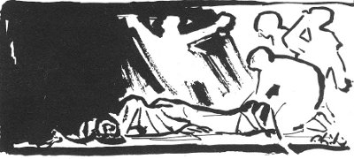

Ödüllerden pek hoşlanmam. İnsanoğlu yarış atı değil ki ödüllendirilsin. Hele sanat konusunda kim birinci, kim sonuncu, bunu kestirip atmak olanaksız gibi bir şey. Öyleyse neden bunca seviniyorum Yaşar Kemal'e Paris'te verilen "Yılın En İyi Romanı" ödülüne? 1979 yılına girerken Maraş albastısı yüreklere yeni çökmüştü ve denilebilir ki bize mutluluk verecek haberler dünyada pek kıttı.
Nicedir "ekonomik ambargo"nun diğer alanlara da sıçradığını sezmemek elde değildi ve bu yüzdendir ki Yaşar'ın ödül kazanması, haberin birdenbire Paris'te patlak vermesi ile sanki birbirini kovalayan zincirleme tatsızlık, dert, felâket dizisi kopmuş, arkasından olumlu bir sürenin başlayabileceği duygusu baş göstermişti. Memleketimizi kimi içerden, kimi dışardan hor göstermek için yarışırken, bir sanat değerimizin Avrupa ve dünya çapında onaylanması, milletçe paylaşılacak bir başarıydı, övüncüydü hepimizin.
Ödül sadece bir imge, ya da simge diyeceksiniz... Simgelerin, imgelerin önemini sakın azımsamayın. Yaşadığımız 20. yüzyılın sonunda imgeler, simgeler, top tüfek, endüstri kuruluşları, enerji kaynakları vb. kadar etkilemekte insanları. Çeşitli kavgalarda haberleşme araçlarının işlevi öylesine önem taşıyor ki, bu yoldan yaygınlaşmış tek imgenin, simgenin vurucu gücü, sayısal niteliği ile orantılı olmayan bir güç taşıyabiliyor, çarçabuk yayılıyor; siyasallaşıyor açıkçası.
Dünyanın en saygın ve ünlü kitabevinin başkanı Claude Gallimard'la Fransız kitapçıları, 31 Ocakta Paris'te, yüzlerce gazeteci, yazar ve aydın kişiler önünde Yaşar Kemal'e "Yılın En İyi Romanı" ödülünü verirken –şimdiden biliyorum– eşim Güzin ve ben, az gidip uz gidip, 37 yıl öncesine dönerek bir arpa boyu yol gidip, birdenbire Çukurova'da bulacağız kendimizi...
Gözümüzün önüne, bir deri bir kemik, köylü delikanlının biri çıkacak. Adı Kemal Sadık Göğceli. Hemite köyünden gelmedir. Dağ bayır dinlemez, köyünden, dağ köylerinden, obalardan, ovalardan, kasabalardan ikide birde kopup gelir Adana'ya, çöker önümüze, ağıtlar, türküler, destanlar serer buruşuk sarı kâğıtlar üstüne yazılmış.
Peki neden toplamıştır bunları? Anadolu bacılarının hep birlikte yaktıkları ağıtların yazıcılığını üstlenmişti, bu zorunluluğu duyuyordu, esnek ve kararlı yazısı ile. O hızla koşup geliyordu tabana kuvvet, sanki kaderi ile kaderimiz buna bağlıymışçasına... Önümüze serdiği söz dizileri, Çukurova kadınlarının ölüm karşısında uyaklı sözleri, bağırtıları, dövünmeleriydi. Sanki ölenin, vurulanın, ezilenin yitikliği, söz kalıplarına dökülünce, yok olmaktan kurtuluyordu. Ağacı, otu, çiçeği, böceği, kurdu kuşu, ırmağı, pınarı, yılanı, çıyanı, serçesi, kartalı, ceylanı, camuzu, çakalı, çorçocuğu, avradı, tutması, yanaşması, elçisi, parababası, körtopalı, çiftçi başısı, ırgatı, işçisi, yarıcısı ile büyük değişimlerin içinde bulunan Çukurova'nın avaz avaz ağıtlarından sorumluydu bu çocuk. Bu sorumluluğu paylaşmak için Göğceli, ilk ağızda bizi seçmişti nedense, üç beş kişiyi ilkin. Tartışılacak bir yönü yoktu bunun, işimiz, gücümüz, yorgunluğumuz, uykumuz, kendi derdimiz nolursa olsun, kışın çamurlarını, yazın tozlarını saçarak delikanlı sökün ediyor ve hemen orda, oturduğumuz kümes misali barınak odamızda ya da Türk Sözü gazetesinin gümbür gümbür işleyen baskı makinesinin yamacında, daha olmazsa ayaküstü sokakta bizi kıstırıyor, tepkimizi merakla bekliyordu.
Her getirdiği söz yumağı akıllara durgunluktu. Dehşetli acı, dehşetli güzel. Delikanlı, köylü usulü büzülüp çöküyor, ya da bir duvara sırt veriyor ve izliyordu şaşkınlığımızı, hınzır ve sevinçli. Halkın yarattığı büyülü sözler bizi duygulandırdıkça, sardıkça, coşturdukça delikanlının sipsivri yüzünde, burgu burgu cin gibi bakışında koskocaman bir sevinç beliriyor, bir kahkaha atıyordu. Ağıtları toplamak, ölümle kavgaya tutuşmak gibi bir şeydi. Yitebilecek olanla, yitenle, ölümle, yok olmakla bir yarışma.
Kurtarmak gerekti Çukurova ve de Toros doğasının, insanının söz serüvenini.
Söz sözden ötedir elbet, önemli olan sözlerin yaşantı gücü, kavga gücü, düş gücü. Göğceli de sezinliyordu bunu besbelli ve bu yüzden kilometrelerce yürüyüp, dağ bayır koşup ne kurtarırsa kârdır kuralınca, önce ağıtları, sonra da türküleri, koşmaları, destanları, Çukurova'nın tüm uyaklı uyaksız söz çeşitlerini, tekerlemelerini, küfürlerini "avlıyordu". Folklor derlemesi filan değildi bu iş, hayat memat işiydi, özbeöz malını kurtarıyordu Çukurova'nın, sorumluydu kuşa kurda karşı, şaka değil. Biliyordu ki gün gelir, sigaya çekerler adamı, "lan hırpo, nerdeydin, neden yazmadın bizi?" Böylece söz avlıyordu Toros eteklerinde, Gâvurdağı'nda, ormanlarda, bataklıklarda, pirinç tarlalarında, nadaslarda, felhanlarda. Bunu yapabilmek için Göğceli yürüyordu tabana kuvvet, boyuna yürüyordu, topladığı dizelerle yürümek arasında doğrudan bir ilişki vardı. Bir sözcük on adım, bir adım karşılığı, bir tümce kilometreler karşılığı olabilirdi yerine göre.
Erenler bir tek söz duyma uğruna az mı yürürlerdi Horasan 'a, Kahire'ye dek, ya Çukurovalı Karacaoğlan az mı yürümüştü, tüm Yürükler, Türkmenler... Ovalardan yaylalara, yaylalardan ovalara in çık, az mı "koşmalar", maniler düzmüşlerdi yol boyunca? Bizim edebiyat dediğimiz bir uzun yürüyüş. Göğceli bu okulun öğrencisiydi. Ayakları ile uyakları ölçüyordu, tıpkı Bursa'daki tutsak şair gibi. O şair Uludağ dibinde, tutuklular evinde, daracık bir odada "volta atıyordu" şiir nöbetine tutulunca, arı gibi vızıldayarak beş adım atıyor, duvara çarpacak oluyor, derken haydi öbür duvara!.. Şiir üretiyordu her gün, kısa adımlı gitgellerle. Hızlı gitgellerle "İnsan Manzaraları"na girişiyordu beriki 1941 yılında. 15 yıl boyunca voltalarını, mapusane yürüyüşlerini ölçecek olsak, uç uca koysak voltalarını, kalıbımı basarım ki birkaç kez dünyayı sarar aldığı yol...
Göğceli, nâmı diğer Yaşar Kemal de az yürümüyordu. Ona "Türküler Müfettişi" adını takmıştım. Bu sefer de işi azıttı, kendi düzdüğü şiirleri getirmeye başlamıştı, tazı gibi koşup Kadirli 'den. Osmaniye'den, Seyhan'dan Ceyhan'dan kopup gelerek... Yeni çeşit bir âşıktı, sazsız. Çağdaş şairlerden haberi yoktu sanılmasın, Çukurova'ya gelmemizden önce İstanbul'da çıkardığımız tüm dergileri, dergicikleri bulmuş okumuştu. Herkesi tanıyordu. Düzyazıya da merakı vardı ama, kendini daha denememişti bu yolda. İlk şiirlerinde, anımsadığım kadarı ile, doğa ağır basıyordu. Bunun böyle olması, Çukurova'yı, Toros'u bilenleri şaşırtmaz. Burda doğanın ezici bir baskısı vardır insanoğlunun üstünde. Karacaoğlan'ın bunca doğaya banmış dizeleri nerden fışkırıyorlardı?
Öyle bir doğa ki, efsanelere göre ölüme bile çare bulunurdu; Lokman Hekim bu bölge otlarından faydalanıp hastaları iyi etmişti, Lokman Hekim'den önce Dioskorides buralarda aynı işi yapmış, ölüme oyunlar oynamıştı.
Hem de, bitkiler nasıl gür fışkırıyorsa Toros eteklerinde, Çukur'da sözcükler de öyledir, öyle fışkırır silme güzel. Biliyorum, doğa bir yana, tarihsel nedenleri var bu birikimin, insan selleri kelime tortularını bırakmış ve bunlar Toros imbiklerinden süzüle süzüle en arı Türkçeyi meydana getirmiş. Bir zamanlar şakamsı öğütlediğim "Çardak köyü Türkçesi"nin nedeni bu. Benimsenmesinin nedeni bu. Örneğin dil sevdalısı her Fransızın daima söylediği "en güzel Fransızca, Loire ırmağı çevresindedir" sözü, hiç de yadırganmaz Parislilerce... İstanbul'da Süleymaniye Mahallesi'nde ya da Beykoz'da (Orhan Veli'nin köyünde) Türkçe az mı güzel? Değil, ama, Türkmenlerden gelme sözcük ve tümce kuruluşu da yabana atılamaz. Hem İstanbul Türkçesi dediğimiz dil, 1453'ten sonra Fatih'in tüm Anadolu bölgelerinden getirdiği toplulukların lehçeler kaynaşmasından, bileşiminden meydana gelmedi mi?
Diyeceğim şu ki, yaman süzgeçlerden geçerek oluşmuş bir dilden faydalanıyordu Göğceli. İyi bir taban...
Aylar geçiyordu. Bata çıka, düşe kalka sözcük avına devam ediyordu kan ter içinde delikanlı. Arada bir, az "harçlık" edinmek için şurda burda, pirinç tarlalarında ya da biçerdöverde, daha olmazsa mahkeme kapılarında "yazıcılık" ediyor, beş on kuruş kazanıyor, son hızla tükettiği ayakkabılarını yeniliyordu. Böylece Adana'ya gelebiliyordu bir süre. Köylü istidaları yazmak belki "şiirsel" değildi, fakat dinlediklerini yazıya dökmek, kupkuru ve edebiyatsız yazmak öğreticiydi; ayak basıyordu kuru gerçeğe, olaylara, kurallara, direnç ve baskılara. Gün geçtikçe aklı yatıyordu düzyazıya. Gerçeğin şiirine giriyor, erişiyordu.
Şiirden düzyazıya geçişte, belki bir ölçüde başka etkenler de vardı. Hemite'nin arka dağlarında rastlanan kimi iri heykellere benziyordu Arif Dino ve bu bilge adam, Göğceli'ye Don Kişot romanını örnek almasını öğütlüyordu, roman yazmasını istiyordu. Roman türünün ana-babasıydı Arife göre Cervantes'in Don Kişot'u. Arifin yorumları Lukacs'ın yorumlarından pek farklı değildi. Göğceli'ye "Kederli Suratlı Şövalye"nin çağ değişimi niteliğini anlatıyor, bölüm bölüm yorumluyordu. İstanbul Edebiyat Fakültesi'ndeki asistanlığını yüzüstü bırakıp Adana'ya gelen Güzin Dino (yeni evlenmiştik) Göğceli'ye Stendhal, Balzac, Flaubert'i bağıra çağıra okutuyor ya da anlatıyordu zorla. Sevmediğinden değil o yazarları, fakat Çukurova'lı delikanlı o kadar doluydu ki, Fransa'nın 19. yüzyıl insan ilişkileri onu sabırsızlandırıyordu biraz. Ama örneğin Balzac babanın sosyal bir durumu kıskıvrak yansıtması, onu etkilemiyor değildi, ya da Stendhal'ın kadınları...
Bana da sorular soruyordu hiç durmadan, ben de aklımın erdiği kadar Gogol'dan, Babel'den, Gertrude Stein'dan, Tzara'dan söz ediyordum rasgele. Bir de Sabahattin Ali vardı ortada... Çarçabuk fark etmiştim ki, Kemal Sadık'ın beğeni ve seçenek gücü sözcüklerin ötesine varıyordu. Saat Kulesi taraflarında kilim satan bir dükkânda en güzel kilimi saniye yitirmeden gösteriyordu bana. Diyelim ki bu kendi köylü alanıydı, özbeöz kültürü idi. Pekâlâ, ya yirmi otuz çizgimi serdiğim zaman önüne, nasıl da hemen en iyisini gösteriyordu hiç şaşmadan! Picasso'nun, Matisse'in, Henry Moore'un renkli baskılarını görünce derhal sihirlerine kapılıyor, günlerce sözünü ediyordu. Dikkat kesilip dinliyordu Eisenstein'in kamera ile yaptığı biçim istiflerini, ya da kurgu uyaklarını... Bilgiçlik taslıyordum, anlayacağınız... Bir de piyes yazmayı denemiş, Orta Anadolu dilini kullanmıştım ilk kez. Çok sarmıştı onu bu metin ve yeni yayımladığım bu kitapçık. Bir iki hafta sonra "Heyeti Vekile" kararı ile toplatılınca, öfkelenip küsüp gitmişti. Acayip bir yönü vardı: Kimse onun kadar sevgi dolu değildi dünyaya karşı, ama birdenbire de ölesiye küserdi insana doğaya, dünyaya. Öylesi günlerde içine çöken karartı yüzüne vurur, acayip bir renge bürünür, büzülür, eğrilir kalır, ya da kaçardı bir süre. Daha tam karar verememişti sevgi ile öfke arasında. Kafası kızınca tabanları ağrıyıncaya, yarılıncaya kadar kaçıyordu rasgele, sonra da uzun, korkulu düşlere dalıyordu 48 saat yumulup bir kenarda.
Günün birinde tam hızla çakıldı karşımıza, yarıştan sonra bir koşu atı gibi titriyordu her tarafı, ayaküstü "Bebek" hikâyesini okudu bize; Arif'e Güzin'e ve de bana. Söylenecek fazla bir şey yoktu, "oldu", dedik, "tamam", dedik, "arkasını getir", dedik yüreğimiz çarparak.
Aslına bakarsanız ne malûmdu arkasını getirebileceği? Öylesine güzel, yemyeşil bir filiz yetişiyordu ki Çukurova'da, ne malûmdu mandaların ayakları altında ezilip yitmeyeceği? O kadar zor, o kadar zordu ki başladığı yoldan bir yerlere ulaşması, kazaya uğramadan, sınıfsal barajlarda eriyip gitmeden...
Bir de filinta gibi acı bir delikanlı daha katılmıştı çevremize, Bursa Hapishanesi tornasından geçen Orhan Kemal. Böylece "Adana Okulu" oluştu, tamamlanmış bulundu.
Bursa'dakinden haberler getiriyordu Orhan Kemalî, taptaze yazılmış dizeler getirmişti ezberinde. Nâzım Hikmet'in imgeleri ile, insanları ile, kalabalıkları, bozkırları, destanları ile, köylüleri ile... Nasıl da dinliyordu Göğceli, Nâzım'ı: "O, topraktan öğrenip / kitapsız bilendir."
Yeni şiirler geldikçe Bursa Cezaevi'nden, köylü delikanlı kamçılanmış bir at gibi tozutuyordu yolları Toros'un dibinde, türküler çığıra çığıra. (Nâzım'la karşı karşıya gelinceye dek, ne çok zaman geçecekti daha...)
Bir süre sonra başımıza gelenler, darmadağın edilmemizin hikâyesi uzun sürer, Göğceli'nin karakollara düşmesi... Hayrola, neden başı derde girdi (daha doğrusu ayakları) diyebilirsiniz belki... Ayrıntıların önemi yok, başka türlü olamazdı sadece. Evet, işin kökeninde sınıfsal baskı yatıyordu. "Ayaktakımından bir köylü parçası", köylüler namına konuşup yazmaya kalkışıyordu, falakalara, "çifte ay"lı dosyalara yeter de artar da böylesi bir çıkış...
Neyse ki günün birinde kapağı İstanbul'a atacaktı tutuklar evinden çıkınca. Buğday harmanına bir tane gibi karışıp İstanbul'a, kalabalıkta yitecek, hem de ne olur ne olmaz isim değiştirecekti. Bir ara "Gaz Şirketi"nde kontrol işlerinde çalıştı, gaz saatlerini denetliyordu elde defter ve cep feneri. Kent dimdik ve kaskatı idi ve delikanlı basamakları çıktıkça bin bir yaşantı ile karşılaşıyordu aralanan her kapıda. Bütün gün merdivenler çıkıyor, iniyordu ve Balzac'ın romanlarını ansıyordu ya da Flaubert'i. Beyoğlu'nun beşinci katları Toros'a tırmanmaktan bile zordu, ayakkabılar bir haftada eriyordu... Derken Cumhuriyet'e girdi, Nadir Bey, Cevat Fehmi, Babıâli... Kebapçılar, İzmirli'nin şerbeti...
Şimdi bugünlerde, her gün Paris'te yürüyüşler başladı yine, Yaşar yürüyor bütün gün, Eyfel Kulesi senin, Saint-Michel meydanı benim, fırdolanıyor. Nedeni, yeni bir kitaba başladı da ondan, bir de Paris Üniversitesi'nde destan üstüne bir seminere katılması var işin içinde. Manas'ı, Dede Korkut'u, Köroğlu'nu tartışıyor etnologlar, öğrencilerle birlikte.
Ortalık kararınca bize uğruyor: "İyi gitti bugün", diyor. Ne gitti, kim gitti, nereye gitti demek gereksiz, biliyorum ki roman "iyi yürüdü" demektir o, çünkü romanlar da yürür, yürür de Paris'e kadar gelir, başını alır dünyayı dolaşır... "Yürü yâ kulum..." Fakat yeni başlanan romanı bitirmek için Menekşe'de, Şile'de, Bolu'da, Bor'da, Niğde'de bol bol yürümesi lazımmış Yaşar'ın...
Yaşar bir Paris köylüsü, Paris de iri bir köy ama, Paris kaldırımları doğadan kesik, bizim illere benzemez, buralar başka türlü. Doğru. Beteri var: Türk gazeteleri sis ya da kar yüzünden Paris'e erişememekte kimi gün ve bu yüzden bir telaş, bir telaş alıyor ki bizimkini... O zaman Yaşar, havasız kalmış bir dalgıca benziyor deryalar dibinde...
Bugün Yaşar'ın romanlarında doğa-insan sorunsalından söz etmeye niyetliydim. Derken gevezeliğe daldım, kusura bakmayın... Ayın 31'inde sayın Claude Gallimard roman ödülünü sunacak, Yaşar'la tokalaşacaklar, fotoğrafçıların "flaş"ları patlayacak, bir gürültü patırtıdır gidecek ve bizlerden, Thilda'dan, kitabı çeviren Münevver Andaç'tan başka kimse bilmeyecek Yaşar'ın o kalabalık içinde tek özlemini: Her şeyi oracıkta yüzüstü bırakıp, Menekşe bayırlarında uçurtma tokuşturmak, ya da daha iyisi Hemite'de şekerkamışı çiğnemek dururken... Ne diye buralara kadar gelmiştir sanki...
Abidin Dino
(Milliyet Sanat Dergisi, 5 Şubat 1979)